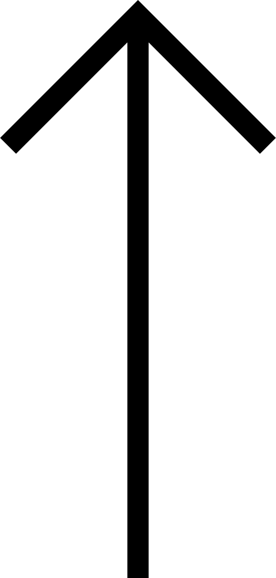

Medical Foundation
Pre-Med (CertHE) BSc. Year 1
BSc. Year 2
- English & Academic Skills
- Biomedicine I: Genes & Cells
- Chemistry I: Atoms, Molecules
- Measurement in the Life Sciences
- Medicine, Disease & Society
- Biomedicine II: Tissues & Systems
- Chemistry II: Periodic & O. Chem
- Measurement in Life Sciences II
- Investigation in Biomedicine
- Foundations of Medical Science
- Doctors, Patients and Health
- Molecular Cell Biology
- Brain, Muscle and Coordination
- Gut, Hormones and Metabolism
- Circulation and Fluid Balance
- Matter and Energy in Medicine
- UCAT/BMAT/Interviews
- Integ. Pathology & Therapeutics 1
- Inflammation, Infection & Immunity
- Experiments Data and Evidence
- Cell Signalling & Communication
- Integ. Pathology & Therapeutics 2
- Genes, Disease and Identity
- Brain, Physiology & Behaviour
- Independent Project
- UCAT/BMAT/GASMAT/Interviews
- Term 1
- Term 2
- Term 3
- Term 4
- Term 1
- Term 2
- Term 3
- Term 4
- Term 1
- Term 2
- Term 3
- Term 4
